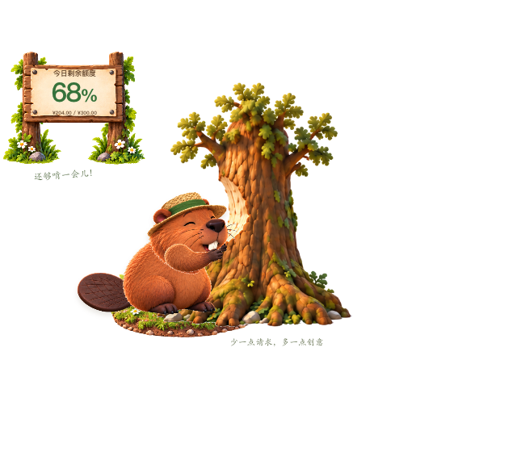
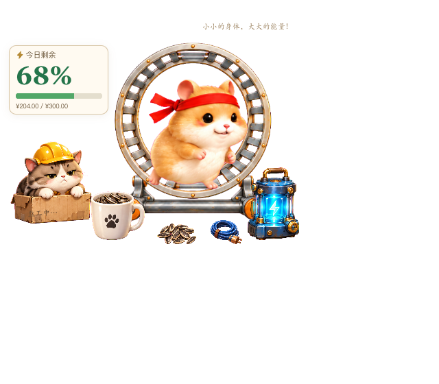
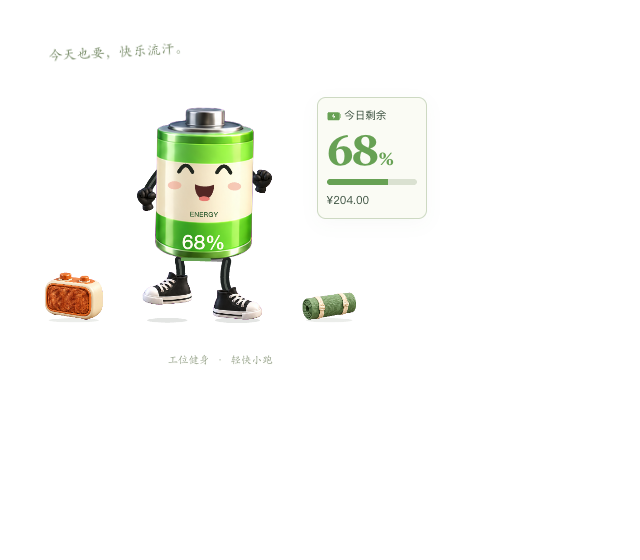

v0.4.0 - 2026-09-11
171 renderer, animation, asset and gesture files remain byte-identical. Chromium and WebKit each compare six pets at three fixed sample times: all 36 screenshot pairs have identical SHA-256 hashes. Each pet also produces distinct frames across time.
Browser fixtures use a simulated 68% balance. This proves same-engine renderer parity, not native window, tray, account or installer acceptance.

Static + 2 animation samples / Chromium + WebKit
Static + 2 animation samples / Chromium + WebKit
Static + 2 animation samples / Chromium + WebKit